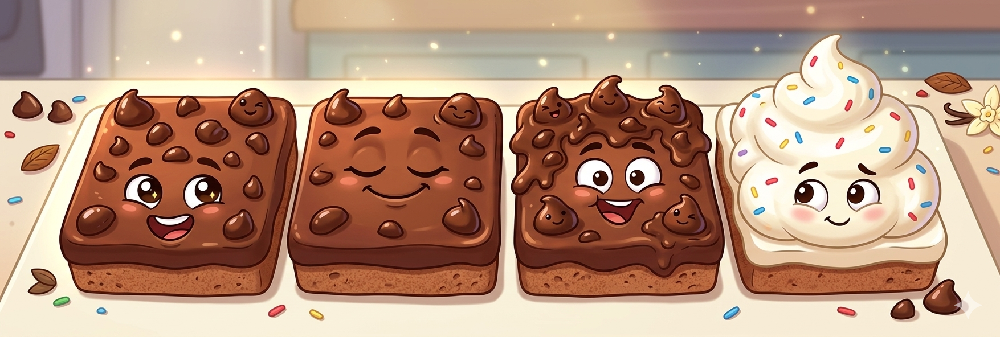
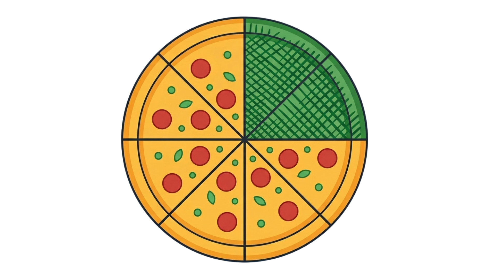

Latihan Pecahan Interaktif
💡 Panduan Mengerjakan:
Perhatikan visualisasi gambar pada setiap soal, baca pertanyaannya dengan teliti, dan klik salah satu pilihan jawaban (A, B, C, atau D). Setelah menjawab, kamu dapat melihat penjelasan lengkapnya!
Perhatikan visualisasi gambar pada setiap soal, baca pertanyaannya dengan teliti, dan klik salah satu pilihan jawaban (A, B, C, atau D). Setelah menjawab, kamu dapat melihat penjelasan lengkapnya!
✨ Ayo Berlatih!
Soal 1
Perhatikan gambar brownis berikut!
Sebuah kue brownies dipotong menjadi 4 bagian yang sama besar
Dari keempat potongan tersebut, ada 3 potongan yang diberi topping cokelat choco chips di atasnya, sedangkan potongan terakhir diberi krim vanilla putih.
Berapakah nilai pecahan yang menunjukkan potongan brownies dengan topping cokelat?
Sebuah kue brownies dipotong menjadi 4 bagian yang sama besar
Dari keempat potongan tersebut, ada 3 potongan yang diberi topping cokelat choco chips di atasnya, sedangkan potongan terakhir diberi krim vanilla putih.
Berapakah nilai pecahan yang menunjukkan potongan brownies dengan topping cokelat?

Penjelasan: Jumlah seluruh bagian brownies ada 4 bagian (taruh angka 4 di bawah sebagai penyebut).
Jumlah bagian brownies yang diberi topping coklat ada 3 bagian (taruh angka 3 di atas sebagai pembilang).
Maka, pecahan brownies yang diberi topping coklat adalah 3/4.
Soal 2
Ibu memotong semangka menjadi 8 bagian. Jika 2 bagian sudah dimakan, maka berapakah pecahan semangka yang dimakan?
Penjelasan Cara Mengerjakan:
• Jumlah seluruh potongan semangka yang dipotong Ibu ada 8 bagian (taruh angka 8 di bawah sebagai penyebut).
• Jumlah semangka yang sudah dimakan ada 2 bagian (taruh angka 2 di atas sebagai pembilang).
Maka, pecahan semangka yang dimakan adalah 2/8.
• Jumlah seluruh potongan semangka yang dipotong Ibu ada 8 bagian (taruh angka 8 di bawah sebagai penyebut).
• Jumlah semangka yang sudah dimakan ada 2 bagian (taruh angka 2 di atas sebagai pembilang).
Maka, pecahan semangka yang dimakan adalah 2/8.
Soal 3
Di halaman belakang rumah kakek terdapat kebun buah yang cukup luas. Di dalam kebun itu, ada 12 pohon mangga yang ditanam berbaris rapi. Saat musim panen tiba, kakek melihat ada 9 pohon mangga yang sudah berbuah lebat, sedangkan sisanya belum berbuah. Berapakah pecahan yang menunjukkan banyaknya pohon mangga yang sudah berbuah dibandingkan dengan seluruh pohon mangga yang ada di kebun kakek?
Penjelasan Cara Mengerjakan:
• Jumlah seluruh pohon mangga di kebun kakek adalah 12 pohon (menjadi penyebut di bawah).
• Jumlah pohon mangga yang sudah berbuah adalah 9 pohon (menjadi pembilang di atas).
Satukan keduanya menjadi bentuk pecahan, yaitu 9/12.
• Jumlah seluruh pohon mangga di kebun kakek adalah 12 pohon (menjadi penyebut di bawah).
• Jumlah pohon mangga yang sudah berbuah adalah 9 pohon (menjadi pembilang di atas).
Satukan keduanya menjadi bentuk pecahan, yaitu 9/12.
Soal 4
Bayangkan kamu punya sebuah pizza besar berbentuk lingkaran seperti pada gambar. Pizza tersebut dipotong menjadi 8 bagian yang sama besar. Kakak kemudian mengambil dan memakan 2 bagian yang diarsir warna hijau. Berapakah nilai pecahan untuk bagian pizza yang berwarna hijau tersebut?

Penjelasan Cara Mengerjakan:
• Pertama, hitung seluruh kotak potongan dalam lingkaran tersebut. Jika dihitung, totalnya ada 8 kotak (ini menjadi Penyebut atau angka di bawah).
• Kedua, hitung berapa kotak yang diberi warna hijau (diarsir). Jika dihitung, ada 2 kotak hijau (ini menjadi Pembilang atau angka di atas).
Gabungkan keduanya: angka 2 di atas dan angka 8 di bawah, ditulis menjadi 2/8.
• Pertama, hitung seluruh kotak potongan dalam lingkaran tersebut. Jika dihitung, totalnya ada 8 kotak (ini menjadi Penyebut atau angka di bawah).
• Kedua, hitung berapa kotak yang diberi warna hijau (diarsir). Jika dihitung, ada 2 kotak hijau (ini menjadi Pembilang atau angka di atas).
Gabungkan keduanya: angka 2 di atas dan angka 8 di bawah, ditulis menjadi 2/8.
Soal 5
Fajar, Roni, dan Siska masing-masing mendapatkan satu batang cokelat yang ukurannya sama persis dari ibu. Cokelat mereka masing-masing sudah dibagi menjadi 10 kotak kecil.
Fajar memakan 7/10 bagian cokelatnya.
Roni memakan 5/10 bagian cokelatnya.
Siska memakan 8/10 bagian cokelatnya.
Jika kita melihat bagian yang mereka makan, siapakah anak yang memakan bagian cokelat paling banyak atau paling rakus?
Fajar memakan 7/10 bagian cokelatnya.
Roni memakan 5/10 bagian cokelatnya.
Siska memakan 8/10 bagian cokelatnya.
Jika kita melihat bagian yang mereka makan, siapakah anak yang memakan bagian cokelat paling banyak atau paling rakus?
Penjelasan Cara Mengerjakan:
• Karena semua pecahan memiliki angka bawah (penyebut) yang sama-sama 10, kita tidak perlu pusing memikirkan ukuran potongannya karena sudah pasti sama besar.
• Kita hanya perlu melihat dan membandingkan angka yang ada di atas (pembilang), yaitu: 7 (Fajar), 5 (Roni), dan 8 (Siska).
Angka yang paling besar di antara 7, 5, dan 8 adalah 8. Karena angka 8 adalah bagian yang dimakan oleh Siska, maka Siskalah yang memakan cokelat paling banyak.
• Karena semua pecahan memiliki angka bawah (penyebut) yang sama-sama 10, kita tidak perlu pusing memikirkan ukuran potongannya karena sudah pasti sama besar.
• Kita hanya perlu melihat dan membandingkan angka yang ada di atas (pembilang), yaitu: 7 (Fajar), 5 (Roni), dan 8 (Siska).
Angka yang paling besar di antara 7, 5, dan 8 adalah 8. Karena angka 8 adalah bagian yang dimakan oleh Siska, maka Siskalah yang memakan cokelat paling banyak.
Soal 6
Ibu guru menuliskan lima angka pecahan secara acak di papan tulis, yaitu: 1/7, 4/7, 2/7, 6/7, dan 3/7. Ibu guru meminta kamu untuk menyusun kembali pecahan-pecahan tersebut mulai dari yang nilainya paling kecil hingga ke yang paling besar.
Setelah kamu berhasil menyusunnya dengan rapi, pecahan manakah yang posisinya berada tepat di tengah-tengah urutan?
Setelah kamu berhasil menyusunnya dengan rapi, pecahan manakah yang posisinya berada tepat di tengah-tengah urutan?
Penjelasan Cara Mengerjakan:
• Perhatikan bahwa semua pecahan memiliki penyebut yang sama, yaitu 7. Jadi, kita cukup mengurutkan angka pembilangnya (angka yang di atas) dari yang paling kecil ke yang paling besar.
• Angka pembilang yang kita punya adalah: 1, 4, 2, 6, dan 3. Jika diurutkan dari yang terkecil, menjadi: 1, 2, 3, 4, 6.
Lalu tulis kembali dalam bentuk pecahan yang sudah rapi berurutan. Dari kelima pecahan di atas, pecahan yang berada di posisi nomor tiga atau tepat di tengah-tengah adalah 3/7.
• Perhatikan bahwa semua pecahan memiliki penyebut yang sama, yaitu 7. Jadi, kita cukup mengurutkan angka pembilangnya (angka yang di atas) dari yang paling kecil ke yang paling besar.
• Angka pembilang yang kita punya adalah: 1, 4, 2, 6, dan 3. Jika diurutkan dari yang terkecil, menjadi: 1, 2, 3, 4, 6.
Lalu tulis kembali dalam bentuk pecahan yang sudah rapi berurutan. Dari kelima pecahan di atas, pecahan yang berada di posisi nomor tiga atau tepat di tengah-tengah adalah 3/7.